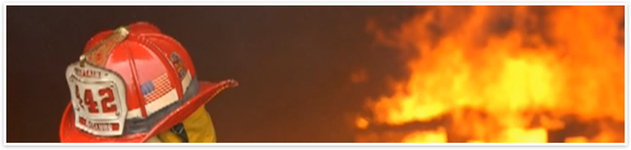

Prior to starting JH Construction, I Juan Hernandez and my family suffered through a residential fire that incinerated most of our home and belongings. I found that I was overwhelmed with numerous contractors making a lot of promises and an Insurance Company requesting that I sign paperwork soon after the incident. After taking a few days to research fire damage restorations services I opted to work with an independent contractor not associated with the Insurance Company. I felt and still believe this was the correct decision as the home was repaired in a more thorough manner and the work was expedited.
“You Dream it, We Build It.”
I learned a lot during that reconstruction process which motivated me to start JH Construction. I had approximately 20 years of construction experience and knew a lot of industry leaders. I was able to form a dynamic team that has the dedication, attention to detail, integrity and professionalism to rebuild and protect your biggest investment. Our team includes architects, engineers, demolition experts, framing/structural experts, plumbers, electricians, and masonry experts that can tackle both small and large projects.
Why should you choose JH Construction over any other company?
In my opinion it comes down to two things - experience and honest work. At JH Construction we have the knowledge, ability and dedication to reconstruct your home with the upmost care and with you, the client in mind. Furthermore, you should be reassured that we work for you and not the Insurance Company. Our goal is and will remain to work closely with you from the initial phase all the way until you occupy your home. This means, we involve you in the design of your home which often can include changes to the floor plan layout and/or room additions or modifications. We will involve you when we work with the Insurance Company, work with you to find your family an appropriate local residence